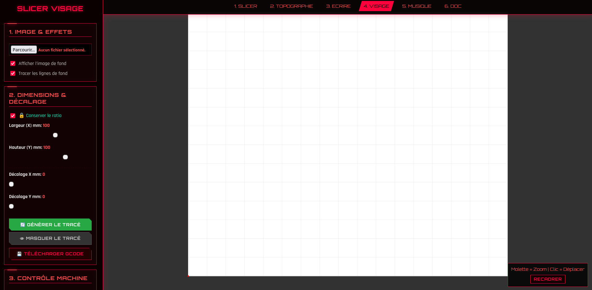

Module 4 : Le Slicer Visage (Algorithme Squiggle)
Le Slicer Visage est un module de traitement d'image spécialisé dans le portrait. Contrairement au premier Slicer qui utilise des hachures droites, celui-ci repose sur l'algorithme "Squiggle" : il module des ondes sinusoïdales pour simuler les ombres et les volumes d'un visage humain.

1. L'Algorithme Squiggle : De la Lumière à l'Onde
Le principe fondamental est de transformer la valeur de gris d'un pixel en une propriété géométrique de la ligne. Plus une zone est sombre, plus la ligne doit être "agitée" pour déposer de l'encre.
- Modulation d'Amplitude : Le script parcourt l'image horizontalement avec un espacement fixe (
ESP_MM). Pour chaque point, il analyse la luminosité. Si le pixel est noir, l'amplitude de l'onde est maximale (AMP_MAX) ; s'il est blanc, la ligne devient parfaitement droite. - Double Fréquence : L'algorithme combine une fréquence de base (pour la structure) et une fréquence de détail (
FREQ_DETAIL). Cela permet de capturer les micro-contrastes comme les cils ou les rides, offrant un rendu organique proche d'une gravure sur cuivre. - Lissage des données : Avant le tracé, l'image subit un léger flou gaussien algorithmique pour éviter que le stylo ne vibre de manière saccadée sur le bruit numérique de la photo originale.
2. Optimisation Mécanique : Lignes Continues
Pour un portrait, la fluidité est essentielle. Le logiciel propose un mode "Lignes Continues" :
- Réduction des levées de stylo : Au lieu de traiter chaque segment d'onde comme une entité à part, le script les enchaîne en une seule trajectoire G-Code par ligne horizontale. Le stylo ne se lève qu'en bout de ligne pour passer à la suivante.
- Gestion du Ratio : Un système de verrouillage (
chkKeepRatio) recalcule automatiquement la hauteur si l'utilisateur modifie la largeur, garantissant que les proportions du visage ne soient jamais étirées ou écrasées (effet anamorphique non désiré).
3. Traduction en G-Code Spécifique
Ce module utilise un jeu de commandes G-Code optimisé pour la vitesse de l'ESP32 :
- M5 / M3 S33 : Pour ce module, nous utilisons
M5(Pen Down) etM3 S33(Pen Up). Cette inversion ou adaptation dépend du firmware configuré pour répondre le plus rapidement possible aux micro-mouvements de l'axe Z. - Flux de données Serial : Comme le portrait génère une densité de points très élevée (plusieurs dizaines de milliers de lignes de code), le système de lecture/écriture Serial utilise un
serialBuffer. Il attend le signal "ok" de la machine avant d'envoyer la coordonnée suivante, évitant ainsi de saturer la mémoire tampon de la CNC.
4. Prévisualisation interactive
Le canvas p5.js permet de simuler le rendu final avant de gaspiller du papier. Le tracé rouge représente le chemin exact du stylo, tandis que l'image de fond peut être désactivée pour juger uniquement de la qualité de la vectorisation. Un système de "Zoom sur souris" permet d'inspecter la précision des ondes dans les zones critiques comme les yeux ou la bouche.